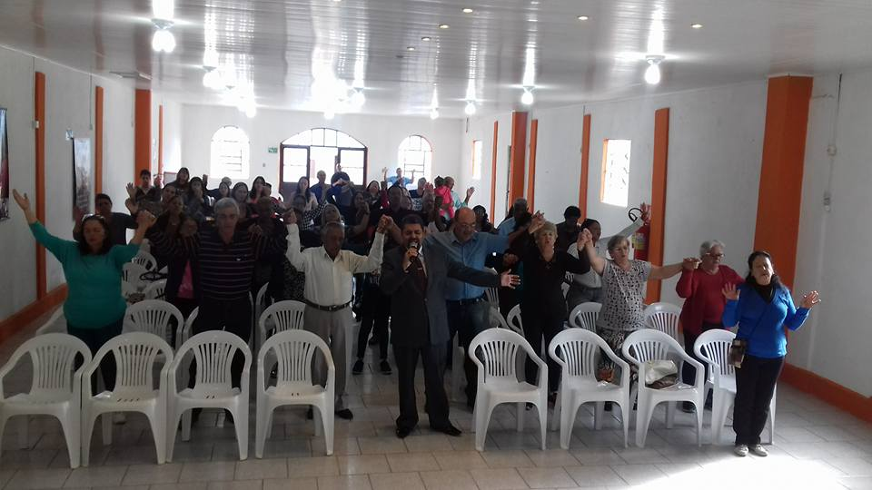
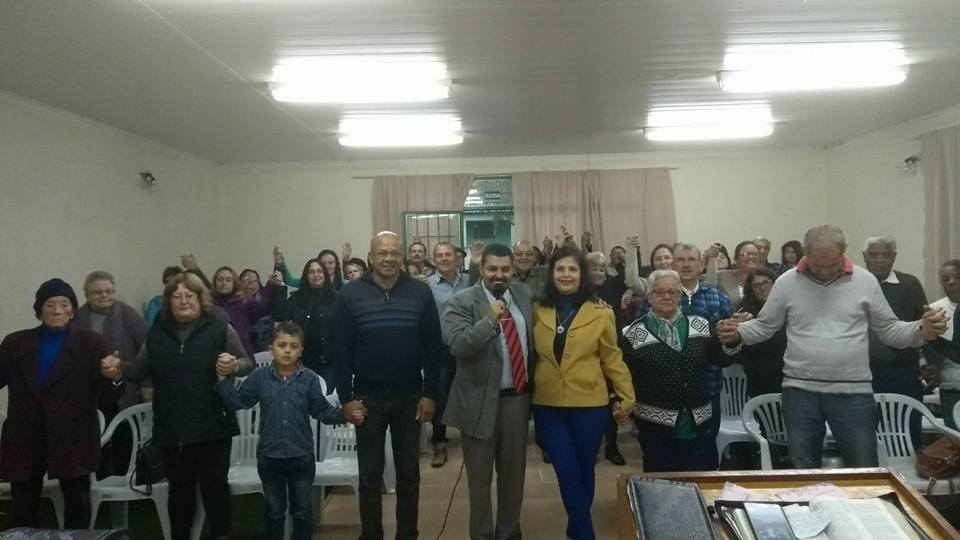
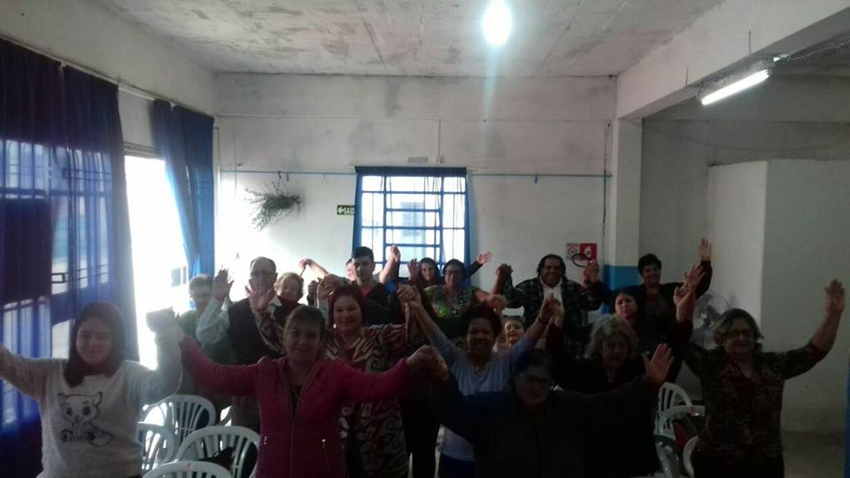
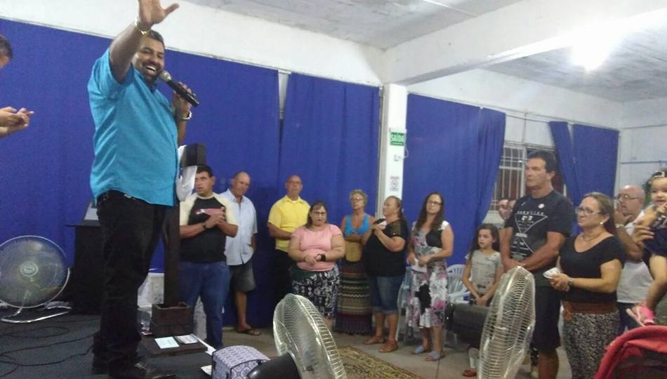
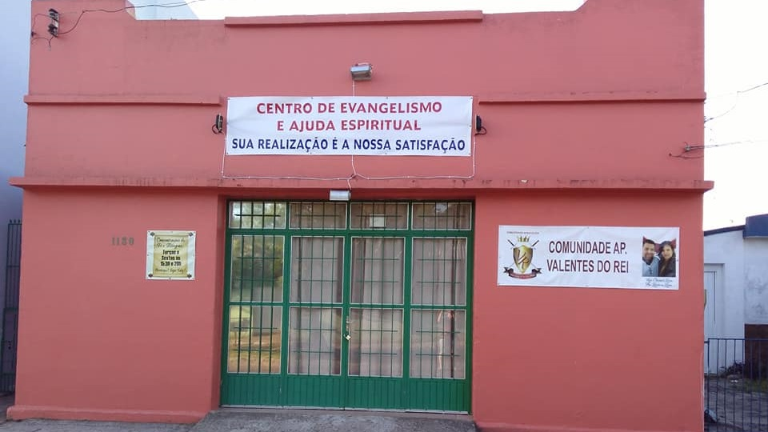
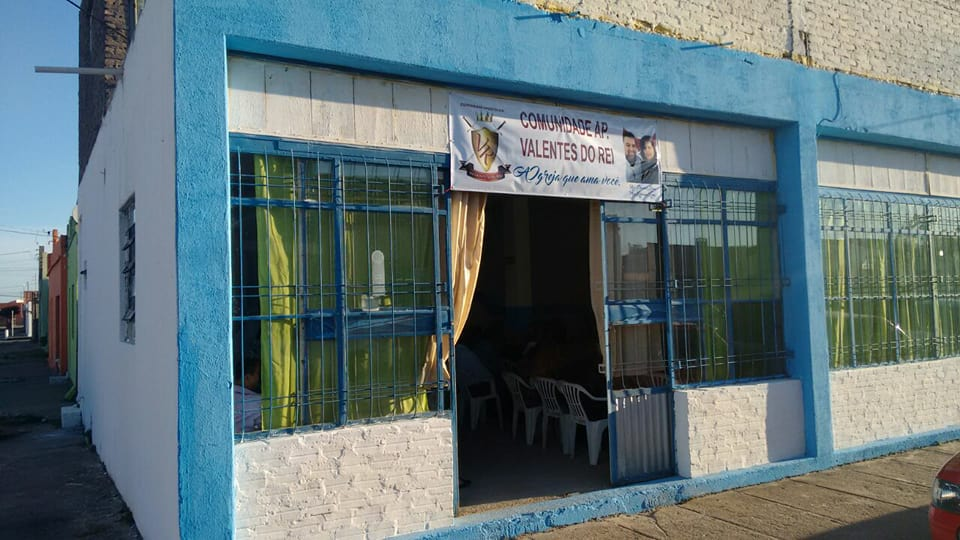
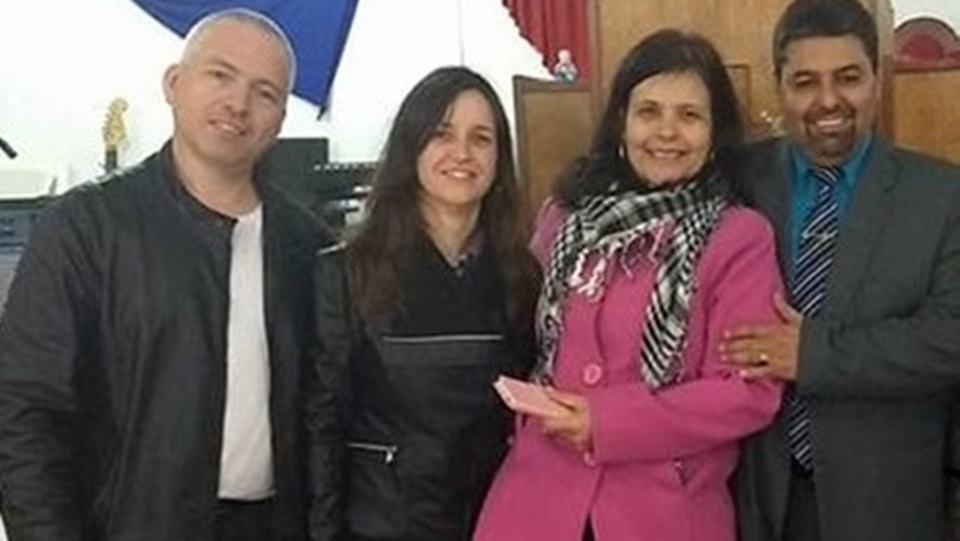

Comunidade Apostólica Valentes do Rei
A Igreja que ama você!
Galeria de fotos
Clique na imagem para expandir em uma nova guia...

Igreja de Jaguarão

Igreja de Jaguarão

Igreja de A. Grande

Igreja de A. Grande

Templo em Jaguarão

Templo em A. Grande

Rev. Cleomar Lima

Pastores auxiliares
* Reservado todos os direitos de imagem, conforme cap. II, artigo 27 do Código Civil Brasileiro,
salvo se autorizadas, ou se necessárias à administração da justiça ou à manutenção da ordem pública, a divulgação de escritos, a transmissão da palavra, ou a publicação, a exposição ou a utilização da imagem de uma pessoa poderão ser proibidas, a seu requerimento e sem prejuízo da indemnizarão que couber, se lhe atingirem a honra, a boa fama ou a respeitabilidade, ou se se destinarem a fins comerciais.